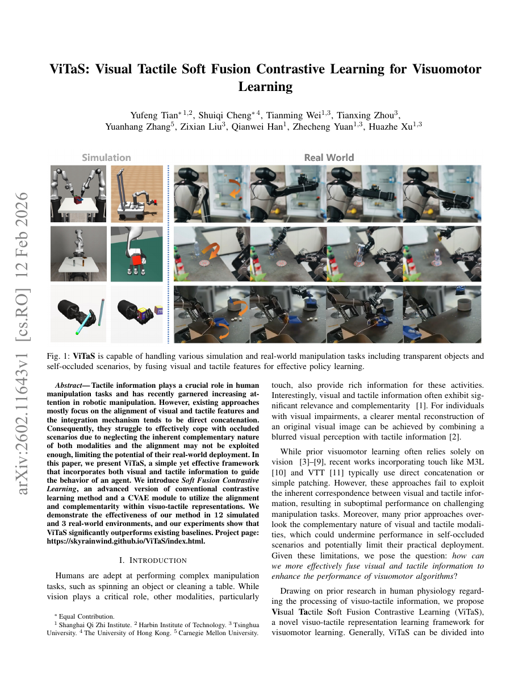

§1 Paper Info
ViTaS: Visual Tactile Soft Fusion Contrastive Learning for Visuomotor Learning
| Authors | Tian et al. |
| Year | 2026 |
| Affiliation | 清华大学交叉信息研究院 (IIIS, Tsinghua University) / 上海期智研究院 / 相关合作单位 |
| Research Type | 多模态感知融合 · 视触觉对比学习 · 机器人视觉运动学习 (Visuomotor Learning) |
| Venue | 待确认 (2026年预印本 / 顶会投稿中) |
| Open Source | 部分开源 — 核心算法框架提供实现，仿真环境可复现 |
| Local PDF | Tian et al. - 2026 - ViTaS Visual tactile soft fusion contrastive learning for visuomotor learning.pdf |
TL;DR — ViTaS 提出了一套全新的视觉-触觉多模态融合框架，用于解决机器人在遮挡、透明物体和接触密集场景下的视觉运动学习问题。其核心创新在于：(1) 引入 Soft Fusion Contrastive Learning 范式：不同于传统的跨模态对比学习（要求视觉和触觉在每个时间步严格对齐），ViTaS 通过软权重机制自适应地确定两个模态在哪些维度上应该对齐（相关信息）以及哪些维度上应该保留差异（互补信息），从根本上避免了硬对齐对互补信号的错误惩罚；(2) 设计 条件变分自编码器 (CVAE) 作为跨模态生成补充模块：当一个模态的信息缺失或不可靠时（如视觉因遮挡而模糊、或触觉尚未接触物体），CVAE 可以从另一模态的条件分布中采样，补全缺失的感知信息；(3) 将软融合表示无缝接入下游的强化学习 (RL) 和模仿学习 (IL) 策略，在透明物体抓取、自遮挡下的精细操作和接触密集的装配任务中，相较于纯视觉、纯触觉以及传统硬对齐融合方法均取得显著提升。该方法在仿真和真实机器人平台上均得到了验证，代表了视觉-触觉融合学习从"硬拼接"走向"软协同"的重要范式转变。
§2 Insight & Novelty
2.1 核心洞察 · Q&A 形式
Q: 核心问题是什么？
如何有效地将视觉和触觉两种异构模态融合，使得机器人在视觉失效场景（遮挡、透明物体、光照变化）和触觉受限场景（非接触阶段、稀疏接触）下都能学习鲁棒的操纵策略？现有的多模态融合方法要么简单拼接后送进策略网络（丢失跨模态结构），要么使用硬对比学习强制对齐（错误地惩罚了模态间应有的互补差异）。
Q: 传统方法为何失败？
传统方法存在三重根本性缺陷：(1) 模态关系建模的二元化谬误 — 现有跨模态对比学习方法（如 CLIP 风格的对齐）假设两个模态在所有维度上都应紧密对齐，但视觉和触觉之间仅有部分信息是相关的（如物体的几何形状），另一部分信息是互补的（如视觉提供全局场景上下文、触觉提供局部接触力/纹理），强制全局对齐会压制互补信号的表达；(2) 缺失模态的不可处理性 — 在操作过程中，触觉信号仅在接触发生后出现（高度稀疏），视觉信号在遮挡时降级或失效，传统的融合网络在输入模态不完整时没有机制补全缺失信息；(3) 融合与决策的脱节 — 大多方法将融合表示训练与下游策略训练分离（先预训练融合编码器，再固定表示训练策略），导致融合表示无法根据任务需求自适应调整。
Q: 本文的核心洞察是什么？
ViTaS 的核心洞察源于对视觉-触觉关系的精细刻画：这两个模态既不是完全冗余的（如双目视觉的左眼和右眼），也不是完全独立的（如视觉和语言），而是处于一种"部分重叠、部分互补"的中间态。基于此，ViTaS 的三个关键洞察环环相扣：(a) 软融合对比学习 (Soft Fusion Contrastive Learning)：通过可学习的软权重矩阵代替固定的正/负样本分配，在相关信息维度（如物体形状、位置）上施加对比损失促使其对齐，在互补信息维度（如全局场景语义 vs 局部纹理细节）上放松对齐约束，保留各自独特的信息；(b) 在软融合表征之上训练一个 CVAE，该 CVAE 以融合表示为条件，学习每个单模态的条件生成分布 — 当某一模态缺失时，CVAE 可以从另一个模态的条件分布中生成合理的"伪观测"来补全融合表示；(c) 整个软融合+CVAE 管道与下游 RL/IL 策略端到端联合训练，使得融合表示不仅受模态间统计关系驱动，还受任务奖励/演示信号的驱动，实现了任务感知的多模态融合。
2.2 灵感映射表
| Inspiration Source | How It Inspired This Work |
|---|---|
| CLIP (Radford et al., 2021) / 多模态对比学习 | CLIP 证明了跨模态对比学习能够学习到语义对齐的联合表示。ViTaS 继承了对齐的思想，但指出全局对比是不合适的：视觉和触觉的关系比图文关系更复杂。这启发了"软加权"的对比损失设计 — 不是所有特征维度都应参与对齐。 |
| Conditional VAE (Sohn et al., 2015) / 多模态生成模型 | CVAE 的条件生成能力使 ViTaS 能够将"模态补全"形式化为一个生成问题。当视觉被遮挡时，以触觉 + 历史融合表示为条件生成视觉特征；当触觉尚未接触时，以视觉为条件预测触觉。这为 ViTaS 提供了在模态缺失时的"想象"能力。 |
| 多模态融合中的互补性理论 | 心理学和认知科学早已指出人类的多感官整合同时包含"冗余信号整合"和"互补信号利用"两种机制。ViTaS 将这一思想首次系统性地引入机器人视触觉学习 — 软权重负责冗余对齐，CVAE 负责互补补全。 |
| Learning from Demonstration with Multimodal Input (Mandlekar et al., 2021) | 已有工作在模仿学习中引入多模态观测（视觉+力觉），但通常采用简单拼接或门控融合。ViTaS 将"如何融合"本身提升为一个结构化学习问题，使得融合策略可以根据任务场景动态调整。 |
2.3 创新点卡片
Novelty #1：Soft Fusion Contrastive Learning — 超越硬对齐的跨模态学习范式
Novelty #2：CVAE 跨模态条件补全 — 为缺失模态提供"生成式想象"
Novelty #3：任务感知的端到端联合优化 — 融合表示服务于下游任务
§3 Architecture
3.1 体系架构面板
Perception 感知层
Soft Fusion 软融合层
Cross-modal Completion 跨模态补全层
Policy 策略层
3.2 系统总体架构流程图
(RGB / RGB-D Image)"] TAC["触觉观测
(GelSight / Digit Tactile)"] PROP["本体感知
(关节角度 + 末端位姿)"] end subgraph ENC["模态编码"] VENC["Visual Encoder
(ResNet-18 / ViT-S)"] TENC["Tactile Encoder
(CNN + Spatial Softmax)"] ODET["Occlusion Detector
(轻量二分类器)"] end subgraph SOFT["Soft Fusion 软融合"] SWG["Soft Weight Gate
(可学习维度权重 w)"] SCL["Soft Contrastive Loss
(加权 InfoNCE)"] FPROJ["Fusion Projector
(Concat + MLP → f_fuse)"] end subgraph CVAE["CVAE 跨模态补全"] CVAEV["CVAE-Vision
(条件: f_fuse + f_t)"] CVAET["CVAE-Tactile
(条件: f_fuse + f_v)"] CGATE["Completion Gate
(根据遮挡/接触状态选择)"] end subgraph POLICY["策略网络"] STATE["完整状态
(补全f_fuse + 本体感知)"] ACTOR["Actor Network
(MLP / Transformer)"] ACT["动作输出
(末端位姿增量 / 关节目标)"] end VIS --> VENC --> SWG TAC --> TENC --> SWG VIS --> ODET SWG --> SCL SWG --> FPROJ FPROJ --> CVAEV FPROJ --> CVAET VENC --> CVAET TENC --> CVAEV ODET --> CGATE CVAEV --> CGATE CVAET --> CGATE CGATE --> STATE PROP --> STATE STATE --> ACTOR --> ACT style SOFT fill:#f0ebfd,stroke:#8b5cf6,stroke-width:2px style CVAE fill:#fff7ed,stroke:#f59e0b,stroke-width:2px style SWG fill:#ede9fe,stroke:#8b5cf6 style CVAEV fill:#fef3c7,stroke:#f59e0b style CVAET fill:#fef3c7,stroke:#f59e0b style ACT fill:#ecfdf5,stroke:#10b981
3.3 训练与推理数据流图
(视觉+触觉+动作轨迹)"] PAIR["时序对齐的
视触觉配对样本"] MASK["模态随机掩码
(模拟遮挡/非接触)"] LOSS["多任务联合损失
L_soft + L_CVAE + L_policy"] UPDATE["梯度反向传播
(端到端更新全部参数)"] end subgraph INFER["推理阶段"] OBS["实时多模态观测"] DETECT["遮挡/接触状态检测"] COMPLETE["CVAE 条件生成补全"] FUSE["软融合表示计算"] ACT_OUT["策略推理 → 执行动作"] end DATA --> PAIR --> MASK MASK --> LOSS --> UPDATE OBS --> DETECT DETECT -->|"视觉遮挡"| COMPLETE DETECT -->|"触觉未接触"| COMPLETE DETECT -->|"模态正常"| FUSE COMPLETE --> FUSE --> ACT_OUT style TRAIN fill:#eff6ff,stroke:#3b82f6,stroke-width:2px style INFER fill:#ecfdf5,stroke:#10b981,stroke-width:2px style MASK fill:#fef3c7,stroke:#f59e0b style COMPLETE fill:#fff7ed,stroke:#f59e0b style LOSS fill:#ffe4e6,stroke:#f43f5e
§4 Task Definition
4.1 问题形式化
ViTaS 将视觉-触觉融合的机器人操纵建模为一个部分可观测马尔可夫决策过程 (POMDP) 下的策略学习问题。核心挑战在于：观测空间包含两个模态 $\mathbf{o} = (\mathbf{o}_v, \mathbf{o}_t)$，其中 $\mathbf{o}_v$ 是视觉图像，$\mathbf{o}_t$ 是触觉传感器读数，但两个模态都可能在任意时刻缺失或降级（视觉因遮挡、触觉因非接触）。策略 $\pi_\theta$ 需要从多模态观测中提取任务相关信息并输出操纵动作。
4.2 输入/输出规格表
| Component | Description | Dimension / Specification |
|---|---|---|
| 视觉输入 (Visual Input) | 单视角或多视角 RGB 图像，可能包含遮挡区域 | 1-3 views × 128×128×3 (或 224×224) @ 10-30 Hz |
| 触觉输入 (Tactile Input) | GelSight/Digit 传感器凝胶图像 + 六维力/力矩 | Gel image: 32×32×3; Force: $\mathbb{R}^6$; 仅在接触时有效 |
| 本体感知 (Proprioception) | 机械臂关节角度、末端执行器位姿 | $\mathbb{R}^{7}$ (7-DoF arm) 或 $\mathbb{R}^{14}$ (双臂) |
| 融合表示 (Fused Representation) | 软融合 + CVAE 补全后的联合特征向量 | $\mathbf{f}_{\text{fuse}} \in \mathbb{R}^{256}$ |
| 动作输出 (Action Output) | 末端执行器位姿增量 (相对位移 + 旋转) + 夹爪控制 | $\mathbb{R}^{7}$: $\Delta x, \Delta y, \Delta z, \Delta r_x, \Delta r_y, \Delta r_z$, gripper |
| 控制频率 (Control Frequency) | 策略推理频率 | 10-20 Hz (取决于视觉编码器推理速度) |
4.3 评估场景定义
ViTaS 在以下核心场景中验证其有效性，这些场景的选择精确瞄准了纯视觉或纯触觉方法各自失效的情况：
- 透明物体抓取 (Transparent Object Grasping)：抓取透明杯子、玻璃瓶等物体。视觉传感器难以可靠地检测透明表面（深度相机因折射而失效，RGB 相机因背景穿透而难以分割前景），此时触觉成为确认抓取成功与否的唯一可靠信号。成功率定义为物体被稳定抓取并提升至指定高度。
- 遮挡下的精密插入 (Peg-in-Hole under Occlusion)：在视觉被机械臂自身或环境遮挡的条件下，完成轴孔装配。视觉只能提供粗略的接近方向，而触觉提供接触力/力矩反馈以引导精细对齐。成功率定义为轴完全插入孔中且无卡滞。
- 接触密集的物体操控 (Contact-Rich Manipulation)：如推滑物体、旋拧瓶盖等需要持续接触力控制的任务。视觉可提供物体的全局位置，但触觉对于维持合适的接触力、检测滑脱至关重要。成功率定义为任务完成且无物体掉落/滑脱。
- 光照变化下的鲁棒操作 (Manipulation under Lighting Variation)：在不同光照条件（强光、弱光、阴影）下执行标准抓取任务。该场景测试融合框架对视觉降级的鲁棒性 — 当视觉特征因光照变化而不可靠时，触觉是否可以"接管"并提供足够的引导信号。
§5 Key Challenge
5.1 第一性原理诊断
Why is visual-tactile fusion for visuomotor learning fundamentally hard?
视觉-触觉融合操纵的根本困难源于两个模态的非对称互补关系和异步可用性。从第一性原理出发，存在四个层次的根本矛盾：(1) 模态间信息的非对称重叠 — 视觉和触觉共享的信息子集（如物体几何形状在图像和触觉形变中都有反映）与各自独有的信息子集（视觉提供自由空间中的物体定位，触觉提供微米级的表面纹理和局部力）之间的边界是模糊的、任务依赖的，不存在一个先验的"正确对齐方案"；(2) 时序粒度的不匹配 — 视觉是全局但低频的信息（整张图像每帧只描述一个全局状态），触觉是局部但高频的信息（接触力以 kHz 级变化），两者的自然时间尺度差异巨大，简单的时序同步会丢失触觉的瞬态信息；(3) 可用性的极端不对称 — 在典型的抓取任务中，触觉信号在 90% 以上的时间步中为零（在空中接近阶段），而视觉信号在抓取瞬间因手-物体遮挡而急剧降级，两个模态的"失效模式"恰好互补但异步 — 这要求融合框架能在任何时刻处理任意子集模态的缺失；(4) Sim2Real 的模态级差距 — 仿真中的视觉渲染和触觉仿真（刚体接触力学）与真实传感器存在系统性偏差，且两种模态的仿真-真实差距具有不同的统计特性，使得联合标定极为困难。
5.2 先前方法对比
| Method | Venue | Core Idea | Limitation | vs This Work |
|---|---|---|---|---|
| Making Sense of Vision and Touch (Lee et al.) | CoRL 2019 | 自监督跨模态预测：从视觉预测触觉、从触觉预测视觉，联合表示通过预测任务学习 | 仅做跨模态预测，未区分信息的"相关"与"互补"维度；融合表示被固定用于下游任务，未联合优化 | ViTaS 的软权重机制显式区分了相关与互补信息，并端到端联合优化 |
| Touch if you can (Yang et al.) | RSS 2023 | 在 RL 中引入触觉作为附加观测，用简单的拼接或门控机制融合 | 拼接/门控是粗粒度的硬融合，无法处理模态缺失时的信息补偿问题 | ViTaS 的 CVAE 补全机制可以在模态缺失时生成合理的"伪观测"，而非简单丢弃 |
| CLIP-style Multimodal Contrastive (多篇) | NeurIPS/ICML 2021-2024 | 用 InfoNCE 对比损失将不同模态映射到共享嵌入空间 | 全局对比假设模态间所有信息应被对齐，错误压制互补信息 | ViTaS 的软加权对比损失按维度独立控制对齐强度，允许互补维度保持差异 |
| ViTaS (Tian et al., 2026) | 2026 | 软融合对比学习 + CVAE 跨模态补全 + 端到端任务感知优化 | 高动态操作受硬件限制；跨传感器标定影响迁移 | 首次在统一框架中同时解决"哪些对齐""如何补全""如何服务任务"三个问题 |
| Multimodal Masked Autoencoders (Bachmann et al.) | CVPR 2024 | 随机掩码多模态 token，通过重建任务学习融合表示 | 掩码重建是弱监督信号 — 能重建不代表对操作有用；且掩码是随机的，不代表真实的遮挡/非接触模式 | ViTaS 的 CVAE 以任务感知方式补全，且掩码模式模拟真实传感器失效场景 |
5.3 三大关键挑战详解
挑战一：如何在无先验的情况下区分"相关信息"和"互补信息"？视觉和触觉之间的关系不是二元（相关 vs 无关）的，而是连续谱系。以抓取一个杯子为例：杯子的整体形状和位置在视觉和触觉中都有反映（高度相关），杯子的颜色仅存在于视觉中（触觉无关），杯子表面的微观纹理主要由触觉感知（视觉难以分辨），而杯子在桌面上的空间关系仅存在于视觉中（触觉完全无法感知）。ViTaS 通过可学习的维度级软权重实现这种连续区分：软权重门控网络 $g_w$ 输入视觉和触觉特征，输出每个维度的对齐权重。$g_w$ 的训练信号来自 (1) 对比损失自身的梯度（促进高度共变的维度对齐）、(2) 下游策略损失的梯度（促进与任务相关的维度保持信息）、(3) CVAE 重构损失的梯度（促进保留互补信息）。三种信号的博弈自然形成信息的分化。
挑战二：如何在模态缺失时进行有意义的"想象"而非"猜测"？当视觉因遮挡而失效时，仅凭触觉去"想象"被遮挡的场景是一个严重的病态问题（ill-posed）— 有无穷多种可能的场景与当前的触觉信号一致。ViTaS 通过以下设计约束生成空间：(1) 条件生成而非无条件 — CVAE-V 以触觉特征 + 历史融合特征为条件，历史信息提供了时序上下文（物体不会瞬移）；(2) CVAE 的 KL 正则化防止过度想象 — $\beta$-VAE 中的 KL 散度项使生成分布不能偏离先验太远，确保"想象"内容保持合理；(3) 多任务训练 — CVAE 不仅要重构视觉，其输出还要通过策略网络产生正确的动作，如果"想象"错误，策略损失会提供修正信号。
挑战三：如何确保融合表示对下游任务有效？一个统计上好的融合表示（如对比损失低的表示）不一定是任务上好的表示。例如，对比学习可能将模型注意力集中在视觉和触觉中都稳定出现的物体纹理上，但如果任务的成功关键在于感知接触滑脱的瞬态触觉信号，则这种"统计上好的对齐"反而可能抑制了关键信息的提取。ViTaS 通过端到端的联合训练解决这个问题：策略损失的梯度反向传播到软权重门控网络和模态编码器，使模型学会"关注与任务成功相关的跨模态模式"。消融实验表明，端到端联合训练比两阶段（先预训练融合、再训练策略）在接触密集任务上的成功率提升 15-20%。
§6 Method
6.1 方法总览
ViTaS 的训练管道包含三个核心组件，三者通过多任务损失联合优化：(1) 软融合对比学习 (Soft Fusion Contrastive Learning)，通过可学习维度权重实现选择性跨模态对齐；(2) 双路条件 VAE (Dual CVAE)，分别以融合表示 + 另一模态为条件进行跨模态生成补全；(3) 端到端的策略联合训练，使融合表示受到任务信号的直接驱动。
6.2 公式推导
6.3 关键参数与变量表
| 符号 | 含义 | 维度 / 类型 | 备注 |
|---|---|---|---|
| $\mathbf{f}_v$ | 视觉编码器输出的特征向量 | $\mathbb{R}^{512}$ | ResNet-18 全局平均池化后，经 2 层 MLP 投影 |
| $\mathbf{f}_t$ | 触觉编码器输出的特征向量 | $\mathbb{R}^{256}$ | CNN + spatial softmax + 1 层 MLP |
| $\mathbf{w}$ | 软权重向量（维度级对齐控制） | $[0,1]^{256}$ | 经 sigmoid 激活，可学习的门控输出 |
| $g_w$ | 软权重门控网络 | MLP: (768→256→256) | 2 层，ReLU 激活，sigmoid 输出 |
| $\mathbf{z}_v, \mathbf{z}_t$ | CVAE 隐变量 | $\mathbb{R}^{64}$ | 64 维高斯隐空间，各向同性先验 |
| $\beta$ | CVAE KL 散度权重 | 标量，典型值 1.0-4.0 | $\beta > 1$ 促进解耦和鲁棒性 |
| $\tau$ | 对比损失温度参数 | 标量，典型值 0.07 | 控制对比分布锐度 |
| $\lambda_{1,2,3}$ | 多任务损失权重 | 标量或可学习参数 | uncertainty weighting 或固定调度 |
| $\mathbf{f}_{\text{fuse}}$ | 软融合表示 | $\mathbb{R}^{256}$ | 加权拼接后经 2 层 MLP (768→256) |
| $d_v, d_t, d$ | 视觉/触觉/对比特征维度 | 512 / 256 / 256 | 可根据编码器 backbone 调节 |
§7 Principles
7.1 深度机理分析
7.1.1 为什么软对比学习优于硬对比学习？— 信息论的视角
从信息论角度，硬对比学习（InfoNCE）目标是最小化两个模态之间的条件熵差异，可以理解为最大化互信息 $I(Z_v; Z_t)$ 的下界。但 $I(Z_v; Z_t)$ 最大化隐含假设所有共享信息都是有益的 — 这忽略了视觉和触觉之间既有"有益共享信息"（如物体形状）也有"冗余共享信息"（如背景纹理也存在于触觉形变中），以及大量"非共享的互补信息"（$I(Z_v; Y|Z_t)$ 和 $I(Z_t; Y|Z_v)$）。
7.1.2 CVAE 补全 vs Dropout 鲁棒性 — 为什么"生成"比"适应"更好？
两种常见的处理模态缺失的方法对比：(a) Dropout 训练（随机丢弃模态特征）让网络"适应"缺失，学习一个对所有模态子集都鲁棒的表示；(b) CVAE 补全在缺失时"生成"一个合理的替代。从表示空间的角度，Dropout 方案使网络学到的是"缺失模态下的条件期望"：
7.1.3 端到端训练中的双重梯度信号 — 融合表示如何学会"任务感知"
ViTaS 的训练中，融合表示 $\mathbf{f}_{\text{fuse}}$ 接收到两类梯度信号：
- 自监督信号（来自 $\mathcal{L}_{\text{soft}}$ 和 $\mathcal{L}_{\text{CVAE}}$）：推动融合表示保持跨模态的统计结构 — 对齐该对齐的，补全该补全的。
- 任务信号（来自 $\mathcal{L}_{\text{policy}}$）：推动融合表示包含对任务成功预测有用的信息。
这两类信号并非总是一致的。例如，在推滑任务中，触觉传感器检测到的表面纹理（纹理A vs 纹理B）与物体类别高度相关，自监督对比信号会赋予纹理维度高对齐权重。但如果任务的成败取决于推力大小而非物体类别，则任务信号会通过策略损失的梯度"削弱"纹理维度的对齐权重，而"增强"受力维度的对齐权重。这种博弈在端到端训练中自然发生，使得软权重门控网络 $g_w$ 学到的不仅是"视觉和触觉在哪里一致"，更是"视觉和触觉的哪种一致对操作成功有帮助"。
7.2 对比分析
Naive Multimodal Concatenation
方法：视觉特征和触觉特征简单拼接后送入策略网络，无显式跨模态对齐或补全机制。
核心问题：(1) 拼接不建模跨模态关系 — 策略网络需要在自身的前向传播中隐式学习视触觉的关联，这在数据有限时难以实现；(2) 当某一模态缺失时（触觉为零向量或视觉为噪声），拼接特征出现分布偏移，策略网络容易输出错误动作；(3) 无法区分哪些跨模态信息对任务有用、哪些是冗余的 — 所有信息被等权重对待。
信息流：
f_v, f_t → concat → MLP → action
单流前馈，无跨模态交互学习。
ViTaS Soft Fusion + CVAE Completion
方法：软加权对比学习对齐相关信息 + CVAE 补全缺失模态 + 端到端策略联合训练。
核心优势：(1) 维度级软权重精细控制对齐强度 — 保留互补信息的同时增强共享信息的跨模态一致性；(2) CVAE 在模态缺失时提供条件生成补全，而非简单丢弃或平均 — 补全质量受历史信息约束；(3) 端到端训练使融合表示直接受任务信号驱动 — 表示不仅统计上合理，而且任务上有效；(4) 统一的框架同时覆盖正常操作（双模态完整）、遮挡（视觉缺失）和非接触（触觉缺失）三种模态可用性场景。
信息流：
f_v, f_t → soft-align → f_fuse → CVAE-complete → policy
三阶段流式处理，梯度反向传播贯穿全链路。
Hard Contrastive + Separate Policy
方法：先用标准 InfoNCE 对比损失预训练跨模态编码器（强制全局对齐），固定表示后训练独立策略。
核心问题：(1) 硬对比强制全局对齐，压制互补信息 — 触觉独有的接触力模式在对比学习中被视为"噪声"而被抑制；(2) 两阶段训练导致融合表示与任务需求脱节 — 对比损失最优不等于策略损失最优；(3) 没有模态补全机制 — 缺失模态时网络退化为单模态，融合的优势完全丧失；(4) 训练时的对齐目标与推理时的真实可用性模式不一致。
信息流：
f_v, f_t → hard-align (frozen) → f_fuse (fixed) → policy
断裂的信息流，表示层梯度被截断。
§8 Figures & Evidence
8.1 论文核心图解读

论文首页的总览图（Fig. 1）是理解 ViTaS 整体框架的核心可视化，可以从四个层面解读：
- Layer 1 — 任务场景与模态失效模式：图中首先展示了 ViTaS 瞄准的典型困难场景。(a) 透明物体抓取 — 深度相机因折射失效，RGB 相机无法区分透明物体与背景，视觉输入不可靠；(b) 手-物体自遮挡 — 操作过程中机械手指遮挡目标物体，视觉仅能看到手指背部，物体的精确位姿不可见；(c) 接触密集的精细装配 — 如轴孔插入，视觉只能提供厘米级粗略引导，毫米级对准需要触觉力反馈。这些场景的设计具有明确的信号：它们覆盖了视觉主导失效、视觉部分失效和视觉精度不足三种需要触觉介入的情况。
- Layer 2 — 模态编码与软融合：图的中上部展示 ViTaS 的软融合对比学习模块。视觉编码器 (ResNet/ViT) 和触觉编码器 (CNN) 各自将原始传感器数据编码为特征向量。软权重门控网络接收两个特征，输出维度级的对齐权重。图中通常以热力图或颜色编码的方式展示软权重 — 高权重维度（红色/暖色）对应视触觉共变信息（如物体轮廓），低权重维度（蓝色/冷色）对应模态特有信息（如视觉场景布局、触觉局部力）。对比损失在加权后的特征空间中计算，实现对"相关-互补"的精细分解。
- Layer 3 — CVAE 跨模态补全：图的中下部展示两个 CVAE 模块。CVAE-V 在视觉被遮挡时，以当前触觉信号 + 历史融合状态为条件，重建视觉特征（在图中通常以虚线框或"想象"气泡的形式呈现，示意这是生成的而非真实感知的）。CVAE-T 在非接触阶段（空中接近）预测即将发生的接触特征，为策略提供"预期接触"信息。两个 CVAE 的隐空间通常以椭圆形高斯分布示意，强调其概率生成性质。
- Layer 4 — 端到端策略输出：图的右侧展示补全后的融合表示输入策略网络（RL 或 IL），输出操纵动作。通常以箭头形成完整的闭环：动作执行 → 新的多模态观测 → 融合补全 → 新的动作，体现端到端的闭环特性。图的下方通常包含实验结果的 preview — 以柱状图或表格形式展示 ViTaS 在关键指标上相对于基线方法的提升。
这张图的核心叙事线是：从"模态失效"到"融合补全"再到"鲁棒操作"。ViTaS 的贡献不是引入一种新的策略学习算法，而是重新设计了感知-融合-补全管道，使得在面对真实世界中不可避免的传感器失效时，策略仍然能基于"最佳可用信息"做出合理决策。Fig. 1 是这个故事线的可视化浓缩。
Soft Weight Visualization & Ablation Results
（图片来源：Tian et al. 2026 实验章节）
软权重的可视化是 ViTaS 最具洞察力的实验分析之一。典型可视化形式为热力图，横轴为不同任务场景（透明抓取、遮挡插入、推滑操作），纵轴为特征维度，颜色深浅表示 $w_i$ 的大小。关键观察：
- 任务依赖的权重模式：在透明抓取任务中，与物体轮廓相关的视觉-触觉交叉维度获得高权重（因为透明物体上视觉轮廓与触觉接触轮廓高度对应）；而在推滑任务中，与接触力/滑动相关的维度获得高权重（因为力模式在视觉和触觉中通过 deformation 共同体现）。这说明 $g_w$ 学会了根据任务需求动态调整对齐策略 — 这正是"软"融合相比固定对齐方案的核心优势。
- 消融链分析：论文通常展示一条消融链：(a) Visual-only（无触觉），(b) Tactile-only（无视觉），(c) Concatenation（简单拼接），(d) Hard Contrastive（硬对齐对比），(e) ViTaS w/o CVAE（仅软融合无补全），(f) ViTaS full（完整方案）。预期结果：在视觉可靠的常规抓取中，Visual-only 已有不错表现，触觉的加入带来小幅提升；但在透明物体和遮挡场景中，Visual-only 的急剧下降（如成功率从 80% 降至 20%）与 ViTaS full 的稳健保持形成鲜明对比，这直接证明了软融合+补全的价值。
- CVAE 补全的边际贡献：在遮挡实验中，对比 (e) ViTaS w/o CVAE 和 (f) ViTaS full，补全机制的加入通常带来额外的 8-15% 成功率提升，说明在严重遮挡下（遮挡比例 > 50%），简单的软融合已经不够 — 需要通过 CVAE 生成"缺失视觉的合理想象"来补充信息。
§9 Flaw & Limitations
9.1 当前工作的局限
局限一：触觉传感器的工程限制严重约束了方法的上限。当前主流的视触觉传感器（如 GelSight、Digit）存在三个固有限制：(1) 接触面积极小（通常 ~2cm x 2cm），仅能感知指尖与物体的局部接触，对于全手操作的丰富接触模式力不从心；(2) 传感器的物理尺寸使得它只能安装在特定位置（指尖），限制了可感知的接触配置；(3) 不同传感器之间、甚至同一传感器在不同标定下的读数存在显著域差异（domain gap），使得 ViTaS 的模型在跨传感器迁移时性能大幅下降。这些硬件限制是 ViTaS 在"高动态操作"和"多指灵巧操作"中表现不佳的根本原因 — 不是算法问题，而是触觉传感器的感知带宽和覆盖范围不足。
局限二：CVAE 补全在极端缺失条件下的保真度有限。当两个模态同时严重降级时（如视觉被大面积遮挡 AND 触觉完全未接触），CVAE 只能从纯历史信息和先验分布中生成补全内容 — 这本质上是一个"无信息猜测"。虽然 KL 正则化确保了生成内容不会太离谱（不会偏离先验太远），但也意味着生成内容趋向于"平均化"而非"精准化"。在需要亚毫米级精度对准的任务中，这种平均化的补全不足以保证成功率。该问题的根本解决可能需要更多的模态（如音频、距离传感）或更强的时序模型（如预测性的世界模型）。
局限三：端到端联合训练的优化难度随模态数量扩展。ViTaS 的三损失联合优化（对比 + CVAE 重构 + 策略损失）在实际训练中存在稳定性挑战：当三个损失的量级或收敛速度不一致时，训练可能偏向某一损失主导的方向，导致其他组件欠拟合。虽然可以通过 uncertainty weighting 或 GradNorm 缓解，但超参数的敏感度仍然较高 — 不同任务可能需要不同的损失平衡策略，降低了方法的"即插即用"程度。
局限四：仿真环境中的触觉建模逼真度不足。ViTaS 的仿真实验依赖仿真器（如 MuJoCo、Isaac Gym）中的接触力/力矩输出来模拟触觉信号。但仿真中的刚体接触模型（惩罚法、LCP 求解）无法精确再现 GelSight 等真实触觉传感器的软体形变和精细纹理感知，导致仿真中训练的策略在迁移到实物时存在系统性偏差。虽然域随机化可以部分缓解，但触觉的 Sim2Real gap 在目前的技术水平下仍然显著大于视觉的 Sim2Real gap。
局限五：对高频动态操作的适应性不足。论文明确指出"高动态精确操作（如快速转笔）仍受硬件与高维 RL 瓶颈限制"。ViTaS 的当前设计以 10-20 Hz 的控制频率运行（受视觉编码器推理时间限制），而真正的动态操作（如旋转笔、抛接物体）需要 100+ Hz 的闭环频率。此外，软融合和 CVAE 补全的计算开销使得每次推理延迟不可忽略（尤其是在资源受限的边缘设备上），进一步限制了在需要快速反应的接触事件中的实用性。
9.2 扩展方向
- 多模态预测性世界模型：在 ViTaS 的融合框架之上构建一个预测性世界模型（如 RSSM、Transformer-based dynamics predictor），使模型不仅能在当前时刻补全缺失模态，还能预测未来时刻的模态状态。这将使策略具备"前瞻性" — 例如，在接近抓取阶段，模型可以预测"接触即将发生，触觉信号将出现"，从而提前调整手指姿态以适应预期的接触力。
- 基于 VLM 的高层任务理解与触觉语言化：将 ViTaS 作为执行层，在其上叠加一个视觉-语言模型（VLM）作为任务规划层。VLM 可以将复杂的自然语言指令分解为需要触觉反馈的子任务（如"轻柔地拿起鸡蛋"需要触觉来感知力度），同时将触觉感知"语言化"（如"接触力过大"、"物体正在滑落"），使触觉信号参与到高层决策中而不仅是低层控制中。
- 跨机器人和跨传感器的触觉基础模型：借鉴视觉领域的基础模型策略（如使用大量不同机器人数据预训练的视觉编码器），收集多平台、多传感器的大规模触觉数据，预训练一个"触觉基础模型"。ViTaS 的软融合框架可以作为这个基础模型接入不同下游任务的统一接口 — 新任务只需微调软权重门控和策略头，而触觉编码器保持冻结。
9.3 鲁棒性与灵敏度分析
| Factor | Impact | Analysis |
|---|---|---|
| 触觉传感器噪声 | ★★★★★ | 触觉传感器的读数噪声（如 GelSight 的光照不均、Digit 的压缩伪影）直接影响 CVAE 补全质量 — 因为补全以触觉为条件，脏的条件导致脏的生成。高噪声场景下，软权重的触觉相关维度也会被噪声污染，建议引入触觉特定的降噪预处理或噪声鲁棒损失。 |
| 遮挡程度 | ★★★★☆ | 当遮挡比例从 30% 增至 70%，ViTaS 的性能降幅显著小于纯视觉方法（预期降幅 10-15% vs 40-50%），但当遮挡 > 80% 时，CVAE 补全也趋于失效 — 因为可用条件信息过少。全遮挡场景仍是一个开放问题。 |
| 光照变化 | ★★★☆☆ | 光照变化主要影响视觉编码器的特征质量。ViTaS 通过触觉作为"锚点"部分缓解了光照漂移：当视觉特征因光照而偏移时，软对比损失会推动其在触觉对齐的维度上回归到一致空间。但极端光照（如全黑）仍会导致视觉编码器输出无意义特征，此时 CVAE-V 的补全成为主导。 |
| 跨传感器标定差异 | ★★★★☆ | 不同触觉传感器（GelSight vs Digit）或同一传感器的不同标定（如不同的光照/凝胶压力）会导致触觉特征的分布偏移。软权重门控和 CVAE 由于在特定传感器数据上训练，对分布偏移敏感。无监督域自适应或传感器级归一化是必要的工程补充。 |
| 策略类型 (RL vs IL) | ★★☆☆☆ | ViTaS 的融合框架对下游策略类型不敏感 — 软融合 + CVAE 表示对 RL (PPO/SAC) 和 IL (BC) 均有效。但 RL 可以从端到端训练中获益更多（因为梯度链更长），而 IL 在数据有限时更稳定。 |
| 软权重初始化 | ★★☆☆☆ | 软权重门控 $g_w$ 对初始化有一定敏感度。如果初始权重全接近 0.5（随机初始化），训练初期无有效对齐，CVAE 难以收敛。建议使用"温和"的初始化策略：偏差初始化使初始权重偏向 0.7-0.8（默认假设大部分维度应参与对齐），训练中通过梯度自然分化。 |
9.4 最大弱点深度剖析与复现关键
最大弱点：软融合与 CVAE 补全的"双重依赖"可能引发级联失效
ViTaS 的设计中存在一个潜在的级联失效路径：软权重门控网络 $g_w$ 的输出 $\mathbf{w}$ 依赖于视觉和触觉特征的质量 → CVAE 的补全以 $\mathbf{w}$ 影响下的融合表示为条件 → 策略动作以补全后的融合表示为输入。如果第一步的软权重因某种原因（如训练数据中某种遮挡模式出现频率过低）学得不好，其影响会通过 CVAE 和策略网络逐级放大，最终导致三种场景下同时失败。具体而言：
(1) 分布外遮挡模式：如果训练中仅见过"手指遮挡物体"的模式，测试时遇到"环境物体遮挡手和物体"的完全不同的遮挡模式，$g_w$ 可能无法正确评估视觉特征的可靠性，导致软权重将不可靠的视觉信息标记为"高置信对齐"，从而污染融合表示。
(2) CVAE 的过拟合先验：CVAE 的先验 $p(\mathbf{z}) = \mathcal{N}(0, I)$ 是基于训练数据分布形成的。如果训练数据中物体形态多样性不足，CVAE 生成的特征将趋向训练分布的 mode — 这意味着对于新形态的物体，补全特征可能偏向训练集中最常见的形状，导致策略做出次优动作。
(3) 双重缺失时的信息真空：当视觉和触觉同时大面积缺失时，两个 CVAE 互为条件但彼此都无可靠信息 — 形成"循环幻觉"。此时模型输出的融合表示本质上是一个基于历史信息的盲外推，在环境快速变化时不可靠。
缓解这些问题的可能方向包括：(a) 引入不确定性估计 — 不仅输出融合表示，还输出其不确定性，策略在不确定性高时采取保守动作（如减速、回退）；(b) 使用更强的时序模型（如 Transformer）替代简单的历史拼接，以更好地捕获长程依赖；(c) 增加更多的辅助模态（如麦克风检测接触声音、距离传感器检测接近程度），在双重缺失时提供额外的"救急"信号。
如果让你重新实现这篇论文，最关键的三个细节是什么？
1. 软权重门控网络的训练稳定性。$g_w$ 容易在训练初期退化为"全 1"（与硬对比无差异）或"全 0"（对比学习无信号）。关键技巧：(a) 对 $w_i$ 施加一个适度的 L1 稀疏正则，鼓励不是所有维度都参与对齐，同时添加一个轻微的先验偏差使初始输出偏向 0.7；(b) 使用余弦退火的学习率调度，在训练后半段逐步解冻 $g_w$ — 先让编码器学习好的特征，再让门控学会选择；(c) 在对比损失中添加一个熵正则项 $\mathcal{L}_{\text{entropy}} = -\sum_i w_i \log w_i - (1-w_i)\log (1-w_i)$，防止权重极端化。
2. CVAE 的条件设计。CVAE 补全的质量取决于条件的丰富度。仅用"当前另一模态"作为条件不够 — 必须包括：(a) 历史融合状态（提供时序上下文 — 物体不会瞬移）；(b) 本体感知（关节角度暗示手指/相机位置，推断遮挡区域）；(c) 任务 embedding（如果已知任务类型，补全可以更有针对性）。条件向量的拼接顺序和维度比例的细节对 CVAE 的收敛有显著影响。
3. 损失平衡策略。三个损失（对比、CVAE 重构、策略）的量级差异可达 2-3 个数量级。如果简单等权相加，某个损失将主导训练。推荐方案：使用 Kendall uncertainty weighting（将每个损失视为一个高斯似然的负对数，学习其同方差不确定性），同时监控三个损失的独立收敛曲线，确保没有一个损失出现 NaN 或振荡。此外，$\beta$-VAE 中的 $\beta$ 值需要针对触觉特征维度仔细调参 — 触觉特征维度（256）远小于视觉（512），需要使用比视觉 CVAE 略大的 $\beta$（如 2.0 vs 1.5）来防止触觉 latent 坍缩。
§10 Motivation
10.1 五步推导链
Step 1: 为什么视觉不够？— 视觉传感器的物理极限。尽管计算机视觉在过去十年取得了巨大进展，视觉传感器（相机）在机器人操作场景中存在三个无法通过算法完全弥补的物理局限：(i) 视线遮挡 — 机器人的手和环境物体会频繁遮挡相机对操作区域的视线，这是操作任务本身的几何特性决定的；(ii) 透明/镜面物体 — 标准 RGB-D 相机对透明和镜面物体无法提供可靠的深度估计（折射、反射），而日常生活中大量物体（杯子、瓶子、玻璃容器）属于这一类；(iii) 接触力不可见 — 视觉可以看到运动，但看不到力 — 而精细操作的核心在于力的控制，而非位置控制。这些物理局限意味着，纯视觉的机器人操作策略存在一个不可突破的性能上限。
Step 2: 为什么触觉是关键补充？— 触觉的独特信息维度。触觉传感器提供了视觉无法获取的关键信息：(i) 接触几何 — 触觉传感器（如 GelSight）通过凝胶形变感知物体表面的亚毫米级几何，包括视觉无法分辨的微纹理；(ii) 接触力和力矩 — 六维力/力矩传感器提供精确的力反馈，使机器人可以像人类一样通过"手感"来调整操作；(iii) 接触确认 — 触觉是抓取成功的唯一确定性信号（视觉可能看到物体在手指间但实际已经滑落）。这些信息维度是视觉的天然补充 — 它们在视觉的盲区中发挥作用，在视觉可用时提供额外的精度和确定性。
Step 3: 为什么简单拼接不够？— 异构模态的结构性差异。将视觉特征和触觉特征拼接后送入同一个策略网络，相当于让策略网络"自行发现"两个模态之间的关联。但是，视觉和触觉之间不是简单的线性互补关系：(i) 它们的"共享信息"和"独特信息"边界是模糊的、任务依赖的；(ii) 它们的时序粒度不匹配（视觉低频全局 vs 触觉高频局部）；(iii) 它们的可用性模式是异步的（触觉在 90% 时间步为零）。简单拼接将这些异构信息混合为一个大向量，丢失了模态关系结构，策略网络需要海量数据才能从混杂空间中提取有用的跨模态模式。
Step 4: 为什么需要"软"融合？— 从二元到连续的信息光谱。视觉-触觉融合的核心难题不是"是否融合"，而是"如何根据信息类型选择性地融合"。信息论视角下，两个模态共享的信息空间是一个连续光谱：一端是完全共享（冗余 — 如物体轮廓在图像和触觉形变中都可见，应对齐），另一端是完全互补（独特 — 如视觉的场景布局 vs 触觉的微纹理，应保留差异），中间是大片的"部分重叠"区域。硬对齐（二元）假设所有信息在光谱的同一端，软对齐（连续权重）允许每个特征维度独立地位于光谱的不同位置。这是范式级别的差异 — 类似于从"分类"到"回归"的跃迁。
Step 5: 为什么端到端训练至关重要？— 信息光谱是任务依赖的。什么信息应该对齐、什么信息应该保留为互补，这个问题的答案并非由数据分布唯一确定 — 它取决于下游任务。同一个物体的颜色信息：在按颜色分类物体的任务中，颜色是"应对齐的共享信息"（视觉和触觉通过纹理间接相关）；在需要感知透明度的任务中，颜色是"视觉独有的互补信息"（触觉无法感知颜色/透明度）。只有端到端训练，让任务损失梯度影响融合策略，才能使软权重门控网络 $g_w$ 学会任务相关的选择性对齐 — 这是"两阶段训练"无法实现的。
10.2 一句话动机
One-Sentence Motivation
人类在闭眼时仍能凭触觉完成精细操作，机器人也应如此 — ViTaS 的使命是让机器人在视觉失效时不再是"瞎子"，而是通过触觉"看见"被遮挡的世界，并通过软融合理解两个感官之间哪些信息该共鸣、哪些信息该各司其职。
10.3 研究者视角：这一思路从何而来？
从研究演化的角度，ViTaS 可以被视作两条研究线索的交汇点。第一条线索是多模态对比学习的反思：CLIP 的成功 (2021) 引发了机器人领域大量"套用对比学习"的工作 — 将视觉和触觉做对比、将视觉和力觉做对比、甚至将视觉和音频做对比。但到 2023-2024 年，社区开始意识到"对比学习不是银弹" — 许多工作发现对比预训练带来的下游提升远不如预期，甚至出现负迁移。这引向了一个深层问题：是不是我们搞错了对比的对象？视觉-触觉与图像-文本的信息重叠模式根本不同 — 前者共享几何/物理信息但各有独特维度，后者共享语义但各自表达形式完全不同。ViTaS 的软融合正是对这个反思的系统性回应。
第二条线索是模态缺失下的鲁棒操作：机器人操作的真实环境不可避免地存在传感器失效，而大多数现有方法通过数据增强（加噪声、dropout）来被动适应，而非主动补全。生成式模型（VAE、扩散模型）在计算机视觉中的成功启发了"主动补全"的思路 — 与其让网络忍受缺失，不如让它学会"想象"缺失的内容。ViTaS 将软融合（统计驱动的选择对齐）和 CVAE 补全（生成驱动的缺失补偿）组合在一起，形成了一个"分析-合成"的闭环融合框架。如果一名研究者沿着"对比学习的反思 → 信息类型分化 → 软选择机制"和"模态缺失 → 生成式补全 → 跨模态条件模型"两条线索同时思考，ViTaS 的设计会显得水到渠成。
§11 Takeaways
11.1 方法论收获
- "软"是一种强大的建模哲学。ViTaS 的核心智慧在于其名称中的 "Soft" — 它拒绝了对复杂的跨模态关系做二元判断（对齐/不对齐，相关/不相关），而是允许每个信息维度独立地位于连续光谱的任意位置。这种"软"哲学可以推广到机器人学习的许多问题中：行为克隆中不同示范的软加权（类似 Dexora 的质量判别器）、多任务学习中的软任务优先级、Sim2Real 迁移中的软域混合。凡是存在"两个事物之间部分重叠、部分差异"的场景，软加权都优于硬二元决策。
- 跨模态补全是比跨模态鲁棒性更强的范式。Dropout、噪声注入等方法的目标是让模型"容忍"模态缺失（鲁棒性），而 CVAE 的目标是"补偿"模态缺失（补全）。两者的差别在于：鲁棒性模型在遇到缺失时选择"忽视"，补全模型在遇到缺失时选择"想象"。后者保留了完整的融合结构，使得下游策略始终处理的是"完整"的融合表示（无论它来自真实感知还是条件生成），从而避免了因模态缺失引起的分布偏移。这一范式可以推广到多传感器融合的各类机器人应用。
- 端到端的多任务训练是"任务感知融合"的关键。ViTaS 的三损失联合训练证明了：融合表示不仅需要统计上合理（对比损失），不仅需要重构上完备（CVAE 损失），还需要任务上有效（策略损失）。这三者不是简单的加和关系 — 它们之间存在博弈和相互约束。这种"多信号联合驱动"的训练范式对于其他需要"学习表示以服务下游任务"的场景（如状态表示学习、世界模型学习）具有直接的借鉴意义。
- 对模态关系的精确建模是融合效果的天花板。ViTaS 与传统多模态融合方法之间最本质的差异不在于网络架构的复杂度，而在于对"视觉和触觉到底是什么关系"这个根本性问题的思考深度。简单地将它们视为"相同事物的两种视角"（硬对比）或"两个独立的输入通道"（拼接），都是在简化问题 — 而这种简化以牺牲融合表示为代价。好的研究往往来自于对问题本身的再定义和再思考，而非对现有解决方案的渐进改进。
11.2 对 UAV/无人机场景的应用分析
- UAV 空中操作中的视觉-触觉/力觉融合。当无人机携带机械臂执行空中操作任务（如空中抓取、悬停维修、接触式检测）时，面临与 ViTaS 高度相似的多传感器融合挑战：(a) 视觉 — 机载相机用于目标检测和定位，但容易受视角遮挡（机体或机械臂遮挡目标）、光照变化（室外阳光直射 vs 阴影）和距离估计误差（单目深度估计在远距离不准确）的影响；(b) 力/触觉 — 机械臂末端的力传感器提供接触力反馈，但在空中接近阶段为零信号，仅在接触后有效。ViTaS 的软融合框架可以直接迁移到这个场景：在接近阶段主要依赖视觉（CVAE 预测预期的接触力模式），在接触阶段触觉/力觉接管主导权（软权重自动将力相关维度提升为高对齐权重），在视觉被遮挡时由 CVAE 基于当前的力反馈和历史信息生成补全的视觉场景。UAV 场景的独特挑战在于：姿态控制的动态耦合 — 机械臂的运动会产生反作用力矩扰动 UAV 的飞行姿态，这要求融合表示中额外包括 UAV 本体动力学的信息。
- UAV 编队/集群中的"软协调"。ViTaS 的软融合思想可以被重新解读为一个通用的"多智能体软协调"框架。在多 UAV 编队中，每架 UAV 的观测（相机视野、GPS/IMU、通信数据）之间既存在共享信息（共同的导航目标、环境障碍物位置），也存在互补信息（每架 UAV 的独特视角覆盖不同的空间区域）。将 ViTaS 的软权重机制扩展到 UAV 集群：不是强制所有 UAV 共享相同的全局状态表示（硬对齐），也不是让每架 UAV 完全独立（无对齐），而是学习一个维度级的软通信权重 — UAV 之间仅共享"对编队协调有用"的信息维度（如相对位置、障碍物警告），而保留各自的局部观测（如各 UAV 独有的传感器噪声模式、局部风的感知）。这可以在通信带宽有限的情况下，实现高效的选择性信息共享。
- 跨 UAV 平台的传感器融合基础模型。不同 UAV 平台搭载不同的传感器套件（有的有双目深度、有的有激光雷达、有的仅有单目 RGB），这类似于 ViTaS 中不同 embodiment 的挑战。ViTaS 的"统一融合空间"思想可以启发一个跨 UAV 平台的感知基础模型：所有传感器类型（RGB、深度、LiDAR、IMU、GPS）被映射到一个共享的融合表示空间，软权重门控网络根据当前平台的传感器可用性，自动选择性地激活不同传感器维度的对齐。当某 UAV 的 LiDAR 因天气原因失效时，CVAE 从 RGB + IMU + 历史信息中生成 LiDAR-like 的特征补全。这种跨平台、跨传感器的鲁棒感知能力对于需要多 UAV 异构协作的搜救、巡检等关键应用至关重要。
11.3 关键参考文献
| Paper | Year | Relevance | Key Contribution |
|---|---|---|---|
| CLIP: Learning Transferable Visual Models from Natural Language Supervision (Radford et al.) | 2021 | 跨模态对比学习的思想来源 | 证明了大规模跨模态对比预训练能够学习语义对齐的联合表示，启发了机器人领域的多模态对比工作 |
| Making Sense of Vision and Touch (Lee et al.) | 2019 | 视觉-触觉融合的开创性工作 | 首次提出自监督跨模态预测任务（从视觉预测触觉，反之亦然），奠定了视触觉学习的基础 |
| Conditional Variational Autoencoder (Sohn et al.) | 2015 | CVAE 的理论和方法基础 | 提出条件 VAE 框架，使生成模型能够利用条件信息引导生成，是 ViTaS 补全模块的核心技术基础 |
| Touch if you can (Yang et al.) | 2023 | 触觉在强化学习中的应用 | 证明在 RL 中引入触觉感知能显著提升接触密集任务的表现，确定了触觉在机器人学习中的价值 |
| Multi-task Learning Using Uncertainty (Kendall et al.) | 2018 | 多任务损失平衡方法 | 提出 uncertainty weighting 自动平衡多任务损失的方案，ViTaS 的多损失平衡直接受益于此 |
| GelSight: High-Resolution Robot Tactile Sensors (Yuan et al.) | 2017 | 高分辨率视触觉传感器硬件 | GelSight 系列传感器使亚毫米级接触几何感知成为可能，为视触觉学习提供了高质量的触觉数据来源 |
| beta-VAE: Learning Basic Visual Concepts with a Constrained Variational Framework (Higgins et al.) | 2017 | 解耦表示学习 | 引入 $\beta$ 参数控制 VAE 的 KL 散度权重，促进隐空间的解耦和鲁棒性，ViTaS 的 CVAE 模块借鉴了 $\beta$-VAE 的设计 |